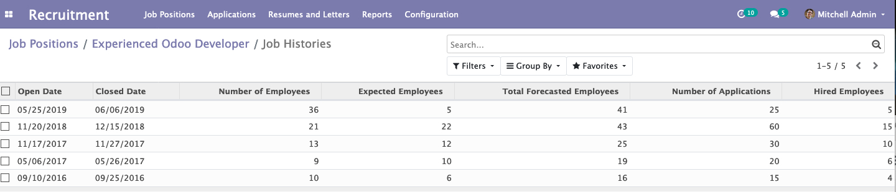

Historical Data
It provide a quick overview of past recruitment data for the specific job position related to recruitment's open date, closed date, number of employees, number of expected employees, total forecasted employees, number of applications, number of hired employees and more
